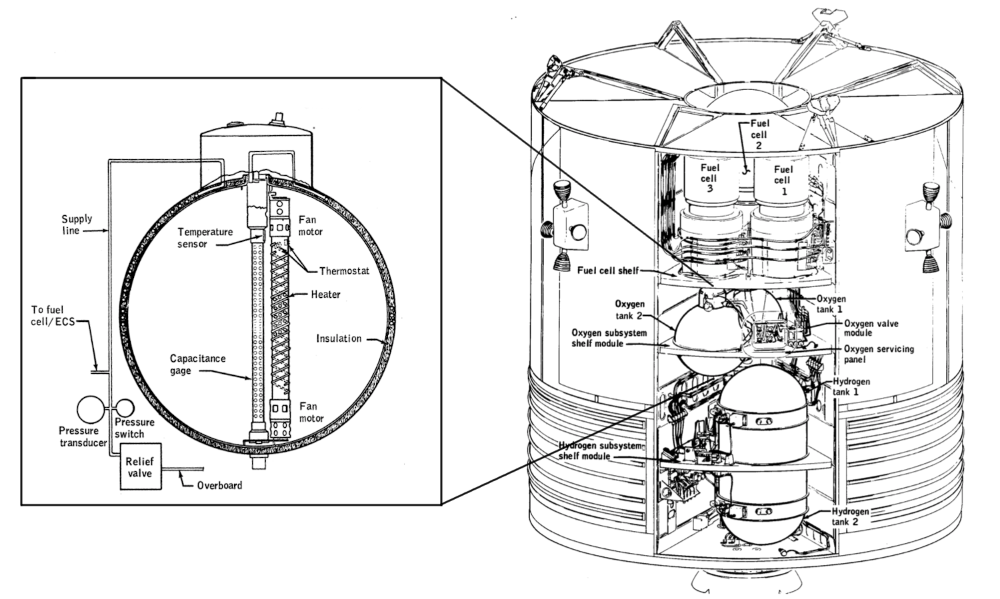

What Caused the Explosion?

The Root Cause
The explosion wasn't caused by anything the crew did wrong. It was a series of small mistakes and oversights that accumulated over years.
The Chain of Events
- 1962: Oxygen tank designed for the spacecraft's 28-volt power system — including small thermostat safety switches that would cut power to the tank heaters if they got too hot
- 1965: Specifications changed to allow 65-volt ground-test equipment at Kennedy Space Center — but nobody upgraded the 28-volt thermostat switches to match
- October 1968: At the factory, the oxygen shelf was dropped about 2 inches while being removed from Apollo 10's service module. The jolt jarred tank #2's fill tube — and that tank was later installed in Apollo 13
- March 1970 (pre-launch test): Because of the damaged fill tube, tank #2 wouldn't drain normally, so engineers ran the heaters for hours to boil the oxygen away. On 65-volt ground power, the 28-volt thermostats welded shut instead of cutting off — temperatures inside reached an estimated 1,000°F, cooking the Teflon insulation off the fan wires
- Result: Bare, damaged wiring sitting in a tank of pure oxygen — waiting for a spark
The Explosion Moment
On April 13, when Jack Swigert flipped the switch to stir the tanks, the damaged wires sparked. In pure oxygen the fire spread instantly, pressure built in seconds, and the tank blew — ripping a 13-foot panel off the side of the Service Module.
The Lesson: No single mistake caused this. A safety switch nobody upgraded, a 2-inch drop, a test that ran too hot — each seemed minor at the time. Small problems can cascade into catastrophic failures. Attention to detail matters in spaceflight.